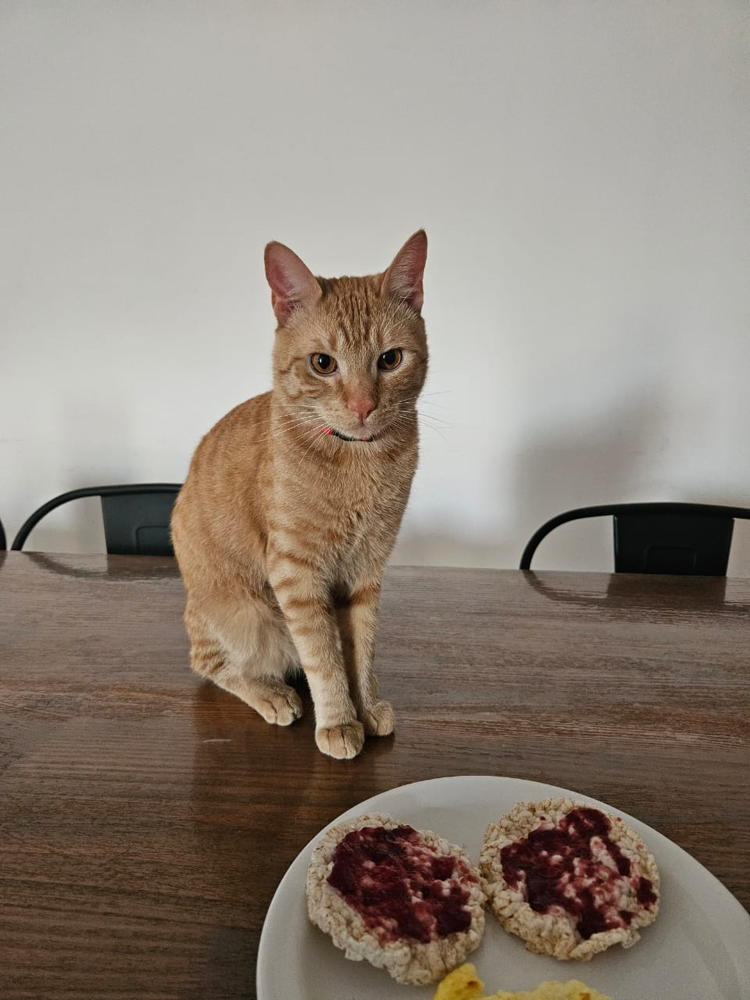
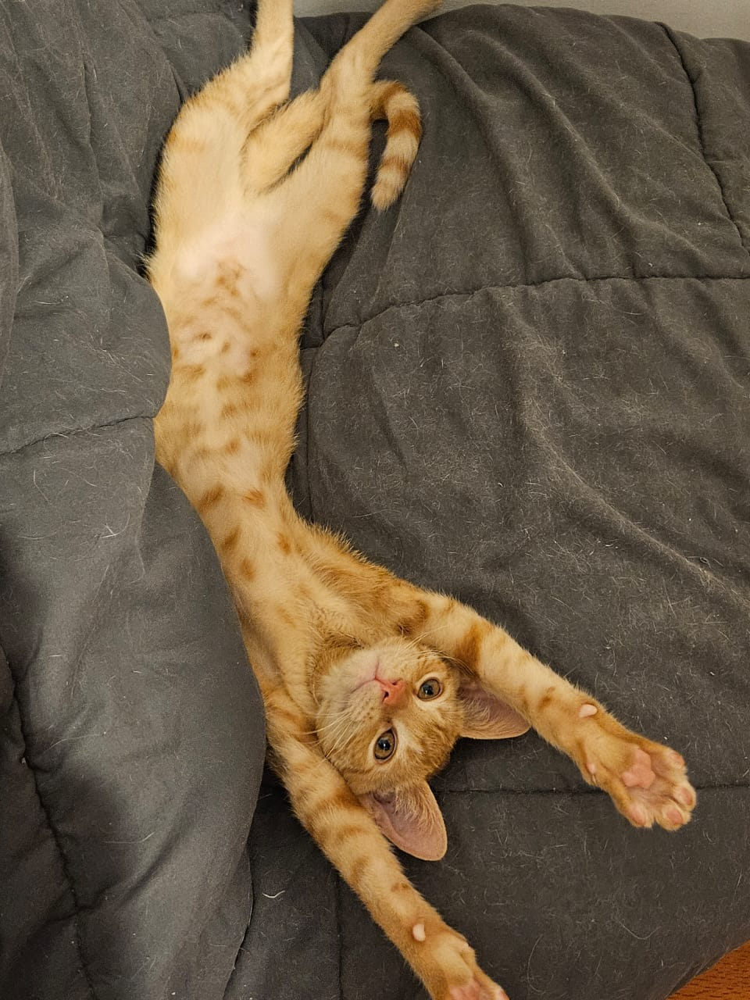

Genu, cariñosamente apodado "El Rabioso", se ganó este título nobiliario gracias a su etapa de neonato sociópata, donde ejerció una política de mordiscos democrática e indiscriminada: atacaba por igual a hombres, mujeres, otros felinos y, en un despliegue de profunda confusión existencial, hasta a su propia cola. Genu es un gato naranja que llegó a nuestras vidas el 1 de enero de 2026, cuando tenía aproximadamente un mes y medio. Lo encontramos afuera de nuestro departamento, muerto de hambre... aunque nunca dejó de tener hambre.

Come absolutamente de todo: desde pan y polenta, hasta pollo y carne. Si algo se puede comer, Genu probablemente ya lo está mirando fijamente.

Desde que llegó, cambió por completo la jerarquía de la casa. Pensábamos que lo habíamos adoptado, pero descubrimos que él nos adoptó a nosotros. Hoy tiene aproximadamente 9 meses y es oficialmente el dueño de la casa. Nosotros simplemente pagamos el alquiler.

Mael es un gato rayado que llegó a nuestras vidas el 27 de Abril de 2024, cuando tenía aproximadamente 45 dias lo adoptamos en ringuelet junto a su hermanita Nubia.
.jpeg)
Mael es una compleja paradoja biológica: un espécimen felino de alta sensibilidad y timidez extrema, que, curiosamente, posee el umbral de la paciencia más elevado registrado en el reino animal. Es un ser pro-social por excelencia, un diplomático nato que mantiene relaciones cordiales con todas las especies... excepto con "la negra", con quien las negociaciones de paz parecen haberse estancado indefinidamente
.jpeg)
Bajo su fachada de felino independiente se esconde "el pobrecito", un título nobiliario ganado gracias a su absoluta incapacidad para la autodefensa Como los bichos le dan pánico y siempre liga de rebote en las peleas ajenas, su principal estrategia de supervivencia consiste en esperar sentado a que vayamos a salvarlo.
.jpeg)